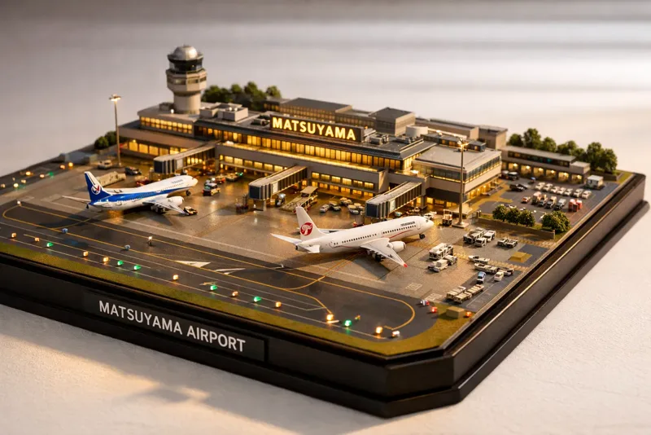
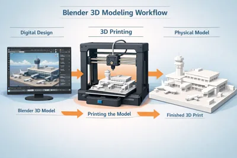
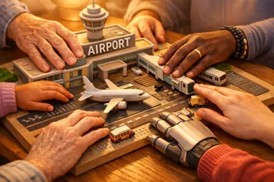
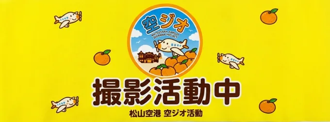
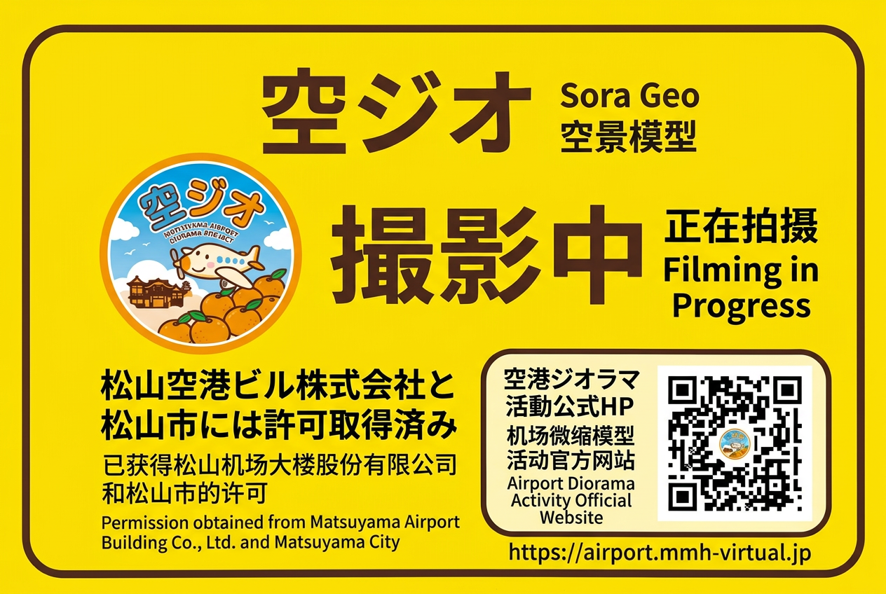
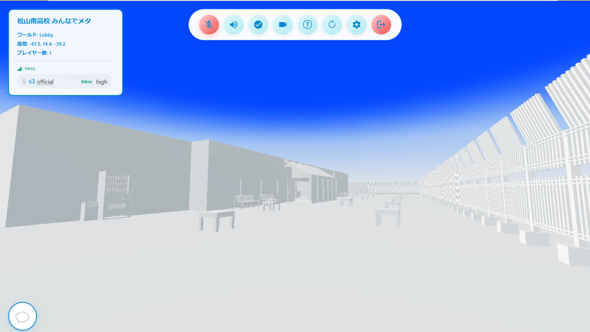
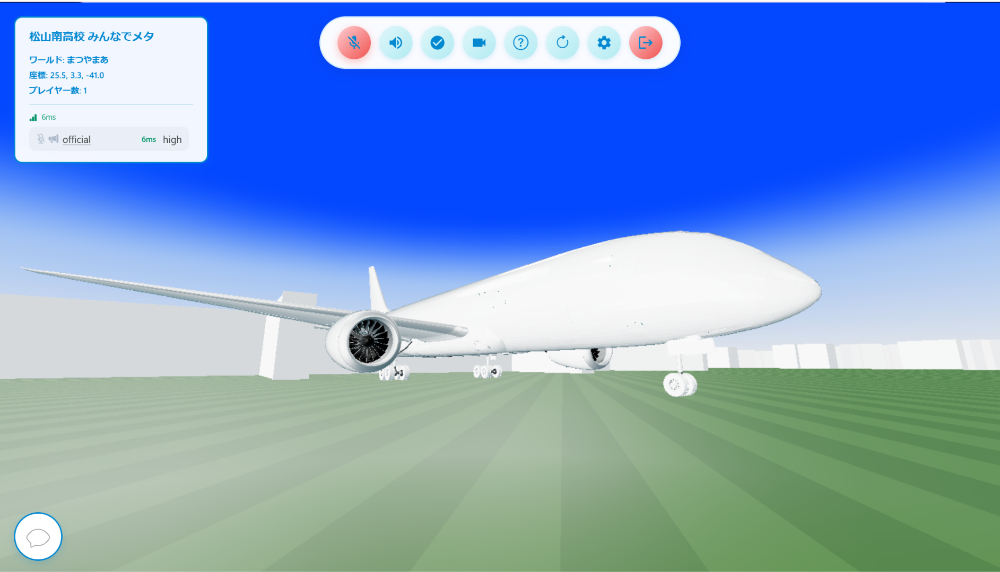

松山城ジオラマ
プロジェクトの第一弾。松山市の象徴である松山城を3Dプリンターで制作し、特別支援学校の生徒の触察体験に活用しました。
読み込み中…
松山南高校 自然科学部 プロジェクト
3Dプリンタで再現したジオラマと、誰でもアクセスできるバーチャル空間。視覚障がいのある生徒や、世界中の旅行者に、松山の魅力を新しい方法で届けます。

About the project
松山市からの依頼を受け、特別支援学校の修学旅行支援として、松山の観光名所をジオラマで「触察」してもらう活動に取り組んでいます。
松山空港の建築を詳細にモデリング。3Dプリント対応の簡略版と、バーチャル空間用の詳細版の両方を制作します。
モデルを3Dプリンターで印刷。視覚障がい者が触察しやすいように、適切なサイズと質感を実現します。
詳細にモデリングしたバージョンをバーチャル空間に展開。外国人観光客も松山空港の構造を理解できます。

特別支援学校の生徒が触察を通じて松山空港の構造を理解し、修学旅行の学習をサポートします。
バーチャル空間を通じて、言語の壁を越えて松山空港の魅力を世界に発信します。
Track record
松山市の観光支援事業の一環として、これまでに3つのジオラマプロジェクトを制作してきました。
これまで
プロジェクトの第一弾。松山市の象徴である松山城を3Dプリンターで制作し、特別支援学校の生徒の触察体験に活用しました。
第二弾として、より複雑な建築構造を持つ道後温泉本館に挑戦。形状の再現精度を大きく向上させました。
進行中
with バーチャル空間
第三弾。ジオラマに加えて、誰でもアクセスできるバーチャル空間も同時展開し、外国人観光客にも松山の魅力を発信します。
Awards
大会やコンテストでの主な受賞・選考結果をご紹介します。
ドラッグまたは矢印で切り替え

このプロジェクトは、視覚障がい者が手で触れることで、建築物の構造や空間配置を直感的に理解できるように設計されています。
Team
松山南高校自然科学部の生徒たちが、それぞれの担当領域でプロジェクトを推進しています。
リーダー、モデリング、印刷担当
モデリング、メタバースサーバー・ファイル共有システム構築担当
モデリング、メタバース化、印刷担当
空港のスキャン、撮影担当
空港のスキャン、撮影担当
Partners
このプロジェクトは、松山市および関連機関のご協力により実現しています。
施設協力・情報提供
松山空港の詳細な建築情報や施設情報を提供。バーチャル空間での正確な再現をサポートしています。
協力
協力
協力
協力
協力
協力
このプロジェクトの透明性と安全性についてご説明します。

松山南高校 空ジオラマプロジェクトの活動腕章

松山南高校 空ジオラマプロジェクトの活動プラカード
詳細にモデリングした松山空港をバーチャル空間に展開。世界中どこからでも、3D空間で松山空港を探索できます。
松山空港の内部構造を360度自由に観察できます。
外国人観光客も松山空港の情報を理解しやすくなります。
チャット、スタンプ、ビデオ通話など、コミュニケーション機能も搭載。
Controls


スマートフォンから、松山空港ジオラマをARで机の上に表示できます。実物のジオラマの雰囲気を、手のひらサイズでお試しください。
カメラで水平な面を認識し、タップしてジオラマを置けます。
iPhone・Android のスマートフォンでご利用いただけます（カメラ許可が必要です）。
明るい場所で、机や床などの水平な面の上でお試しください。
ARでジオラマを体験